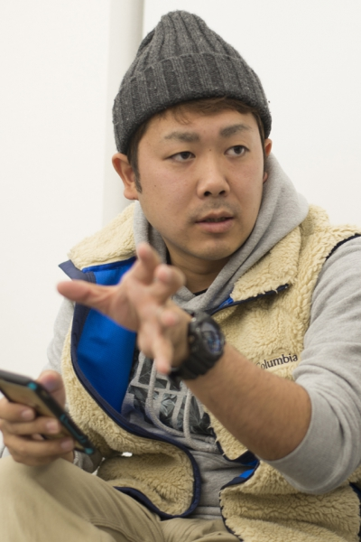

A Film by Koichi Izuhara · PLAN IZ
When a Festival Dies, So Does a Community
The Film
"It was never just a festival.
It was the heartbeat of a community."
Yumemi lost her father to a Danjiri festival accident. Haunted by grief, she fled to Tokyo — vowing never to return. Then her grandfather dies, and she comes home to find that the very Danjiri her father loved most is on the verge of permanent extinction.
Driven by a force she cannot name, she cries out: "Is this really okay?!" — and sets in motion a desperate push to revive the float one final time.
Young and old, stubborn elders and restless youth, all must find a way to pull together before the last ropes are cut forever.
Based on the real story of Osawa-cho, Kishiwada City, whose Danjiri nearly vanished — until a film brought it back to life. Fiction rooted in documentary truth.
Trailer
Director

Director
Writer & Director
Born in 1987 in Kishiwada City, Osaka — the birthplace of the Danjiri festival — Koichi Izuhara grew up pulling the float through the very streets he would later immortalise on screen.
He moved to Tokyo at 20 to pursue filmmaking, studying under acclaimed director Kazuyuki Izutsu. After years as an assistant director, he made his debut with the short film Flowers at the Festival (2013), which won the Runner-up Grand Prix at the Kashikojima Film Festival.
In 2022 he directed his first feature, Restaurant in the Forest, released nationwide in Japan. He is also a published novelist — his debut Keyaki no Tsure (2022) is set during the Danjiri festival.
DANJIRI is his most personal work: shot on location in Osawa-cho with full cooperation from the town's real festival community.
Production Services
Planning a production in Japan? PLAN IZ offers full-service production support across Japan — from location scouting to cast and crew coordination. We know this country, its landscapes, and its people.
Location Scouting
Nationwide location research and permits. Urban, rural, coastal, traditional — we find the right backdrop for your story.
Cast & Talent
Access to a wide network of professional actors across Japan. We handle casting coordination for both leading and supporting roles.
Crew & Production
Full crew assembly — directors of photography, art direction, sound, and production management — tailored to your project scale.
Contact
For international sales, festival submissions, press enquiries,
and Japan production services.